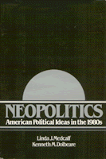

<body bgcolor="#FFFFFF" text="#000000" link="#0000FF" vlink="#CC0000" alink="#CC0000"><center><hr width="350" size="1" align="center" noshade>A comprehensive and timely analysts of the origins, programs, and prospects of eight systems of political belief<hr width="350" size="1" align="center" noshade><p><a href="https://cdcshoppingcart.uchicago.edu/Cart/ChicagoBook.aspx?ISBN=9780877223887&&PRESS=temple" target="_top">Buy this book!</a> | <a href="https://cdcshoppingcart.uchicago.edu/Cart/Cart.aspx?PRESS=temple" target="_top">View Cart</a> | <a href="https://cdcshoppingcart.uchicago.edu/Cart/Cart.aspx?PRESS=temple" target="_top">Check Out</a></p><p></p></center><!--none//--><h1>Neopolitics</h1>
<H2>American Political Ideas in the 1980s</H2>
<h3>Linda J. Medcalf and Kenneth M. Dolbeare</h3>
<P>cloth 0-87722-388-2 $32.95, Mar 85, <FONT COLOR=#990033>Out of Print</FONT>
<BR> 224 pp
</P><p>Here is a book which speaks to students� everyday concerns about their country and future, a book which provides a comprehensive and timely analysts of the origins, programs, and prospects of eight American systems of political belief. Liberalism, neoliberalism, economic democracy, democratic socialism, neoconservatism the Old Right and the New Right&#151all major systems of belief active and relevant today in the United States&#151are covered in one comprehensive text. The authors have established, in addition, an original analytic framework that permits the whole spectrum of political ideas to be introduced into the beginning course in American politics.
<p>This book handles existing American ideas; its American focus insures that ideas are not labeled or categorized to conform to European models. The authors make "American Exceptionalism" into a premise instead of an apology. Extensive use of original sources allows each system to speak for itself. Also, the first two chapters provide a sound introduction to the background of American political thought, tracing the origins, evolution, and contemporary context of 1980's ideas.
<p>Several summary charts support the accessible pedagogical method, and a helpful glossary defines basic concepts, showing their historical derivation. A list of suggested readings accompanies each chapter, adding thoroughness to an already wide-ranging analysis. As today�s students experience the major economic and political developments of our time, this is a sourcebook that incorporates all political systems of belief&#151with equal fairness to the New Right&#151relevant to the shape of American politics today and in the future.
<BR>&nbsp;<H2>About the Author(s)</H2>
<P><b>Linda J. Medcalf</b> teaches at Olympia Technical Community College.</P>
<P><b>Kenneth M. Dolbeare</b> teaches at Evergreen State College.</P>
<BR><H2>Subject Categories</H2>
<p><A HREF="/tempress/political.html" TARGET="_top">Political Science and Public Policy</a>
</p>
<p align="center"><a href="https://cdcshoppingcart.uchicago.edu/Cart/ChicagoBook.aspx?ISBN=9780877223887&&PRESS=temple" target="_top">Buy this book!</a> | <a href="https://cdcshoppingcart.uchicago.edu/Cart/Cart.aspx?PRESS=temple" target="_top">View Cart</a> | <a href="https://cdcshoppingcart.uchicago.edu/Cart/Cart.aspx?PRESS=temple" target="_top">Check Out</a></p><p><font face="Arial" size="1"><a href="copyright.html" onMouseOver="window.status='Web Copyright Policy';return true;" onMouseOut="window.status=''" title="Web Copyright Policy">&copy;</a> 2015 <a href="http://www.temple.edu" target="new" onMouseOver="window.status='Link to Temple University home page';return true;" onMouseOut="window.status=''" title="Link to Temple University home page">Temple University</a>. All Rights Reserved. http://www.temple.edu/tempress/titles/382_reg.html</font></p>